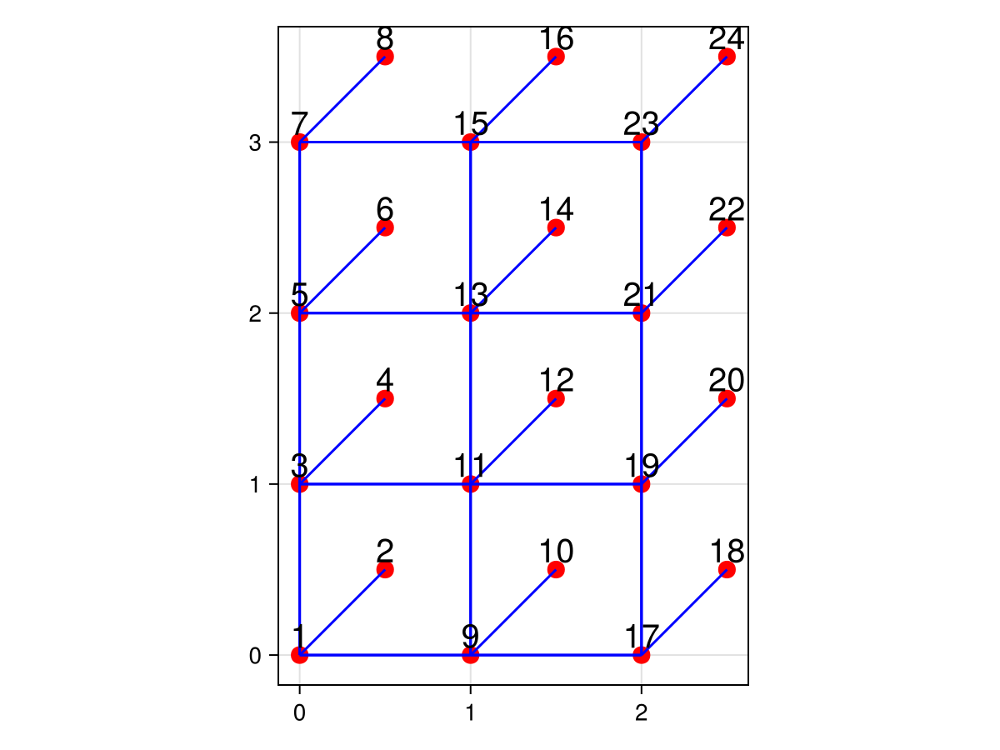

Custom lattices
To define a custom lattice, we need to construct a custom UnitCell. A unit cell consists of 3 elements :
vectors: vectors that define how the unite cell translates in spacesites: list of site position in the unit celledges: list of edges between the unit cell and the neighboring unit cells
For example, the unit cell of the square lattice is :
const SQUARE_CELL = UnitCell(
((1.0,0.0), (0.0,1.0)),
[(0.0,0.0)],
[(1, (0,1), 1),
(1, (1,0), 1)]
)where (1, (0,1), 1) means that the first site of the unit cell is connected to the first site of the neighboring unit cell in the direction (0,1). A cell can contain multiple sites, and the edges can connect any site to any site in the neighboring unit cell. For example, the unit cell of the hexagonal lattice is :
const HEXAGONAL_CELL = UnitCell(
((1.0,0.0), (0.5,sqrt(3)/2)),
[(0.0,0.0),
(0.5, sqrt(3)/6)],
[
(1, (0,0), 2),
(1, (-1,0), 2),
(1, (0,-1), 2),
]
)(1, (0,0), 2) means that the first site of the unit cell is connected to the second site of the same unit cell, (1, (-1,0), 2) means that the first site of the unit cell is connected to the second site of the neighboring unit cell in the direction (-1,0) and (1, (0,-1), 2) means that the first site of the unit cell is connected to the second site of the neighboring unit cell in the direction (0,-1).
Lets define a custom lattice: a square lattice with an extra site in the middle of the unit cell, connected to one corner of the unit cell.
using CairoMakie
using SimpleLattices
const CUSTOM_CELL = UnitCell(
((1.0,0.0), (0.0,1.0)),
[(0.0,0.0)
(0.5,0.5) ], # extra site in the middle of the unit cell
[(1, (0,1), 1),
(1, (1,0), 1),
(2, (0,0), 1)] # extra site connected to the first site of the unit cell]
)
L = Lattice(CUSTOM_CELL, (3, 4); periodic=(true, true))
plot_lattice(L)